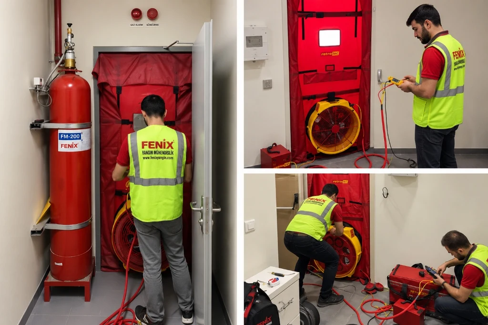

Oda Sızdırmazlık (Door Fan) Testi — Yöntem ve Kabul
Gazlı söndürme sistemi, boşalan ajanı mahalde tutabildiği sürece yangını söndürebilir. Door fan testi mahal tutma süresini (hold time) ölçen tahribatsız test metodudur.

TUTMA SÜRESİ OLMADAN SİSTEM ONAYLANMAZ
Oda sızdırmazlık testi (Door Fan Testi), gazlı yangın söndürme sistemlerinin (FM200, Novec 1230, İnert gazlar) boşalma sonrasında yangını kalıcı olarak söndürebilmesi için gereken minimum 10 dakikalık gaz tutma süresini (Hold Time) odaya kimyasal gaz boşaltmadan, kalibre edilmiş kapı fanı ve diferansiyel basınç sensörleriyle doğrulayan tahribatsız bir mühendislik testidir. ISO 14520-1 Ek E ve NFPA 2001 Ek C standartları ile Türkiye Yangından Korunma Yönetmeliği uyarınca ilk kabulde ve periyodik denetimlerde yasal olarak zorunludur.
Standart referansları ve yasal zorunluluk çerçevesi
STANDART TEST PRENSİBİ VE TUTUCULUK ZORUNLULUĞU
Oda sızdırmazlık testi, gazlı söndürme tasarımının kağıt üzerinde doğru olmasının ötesinde, korunan hacmin fiziksel olarak gazı hapsetme kabiliyetini ölçer. Uluslararası yangın güvenliği normlarında bu test yapılmadan hiçbir temiz gazlı sistem "işletmeye hazır" kabul edilmez.
Türkiye ve uluslararası yangın mühendisliği uygulamalarında oda sızdırmazlık testini zorunlu kılan birincil normatif referanslar şunlardır:
| Standart / Yönetmelik | Kapsam ve Bölüm | Zorunlu Asgari Kriter |
|---|---|---|
| ISO 14520-1:2023 | Ek E (Enclosure Integrity Procedure) | Min. 10 dakika tasarım konsantrasyonu koruma süresi |
| NFPA 2001:2022 | Annex C (Enclosure Integrity Procedure) | Descending interface seviyesinin en yüksek ekipmanın üstünde kalması |
| TS EN 15004-1 | Sabit Gazlı Söndürme Sistemleri | Devreye alma öncesi sızdırmazlık doğrulama protokolü |
| BYKHY (Madde 98) | Binaların Yangından Korunması Hakkında Yön. | Gazlı söndürme yapılan hacimlerin sızdırmazlık taahhüdü ve periyodik denetimi |
Test prensibi ve alçalan arayüz (Descending Interface) dinamiği
Gazlı söndürme sistemleri boşaldığında (genellikle 10 saniye içinde), hava ile homojen bir karışım oluşturur. Ancak temiz gazlar havadan belirgin biçimde daha ağırdır (örneğin FM200 havanın yaklaşık 6 katı, Novec 1230 yaklaşık 11 katı buhar yoğunluğuna sahiptir). Bu yoğunluk farkı mahalde hidrostatik bir kolon basıncı oluşturur.
NFPA 2001 Annex C uyarınca gaz kaçağı mekanizması iki ana dinamikle işler:
- Alt Seviye Kaçakları: Ağır gaz karışımı yükseltilmiş taban altından, kapı altı aralıklarından veya döşeme geçişlerinden dışarı sızar.
- Üst Seviye Kaçakları: Tabandan gaz sızdıkça oluşan negatif vakum, asma tavan üstünden ve menfezlerden temiz hava (oksijen) emilmesine sebep olur.
- Alçalan Arayüz (Descending Interface): Oksijenli hava ile gaz karışımı arasında net bir sınır tabakası oluşur ve bu tabaka zamanla aşağıya doğru alçalır.
Testin başarı kriteri, bu arayüz yüksekliğinin mahalde korunan en yüksek kritik ekipman (sunucu kabineti, arşiv rafı veya pano tavanı) seviyesinin üstünde en az 10 dakika (600 saniye) boyunca sabit kalabilmesidir.
Test düzeneği, kalibrasyon ve uygulama aşamaları
Fenix Yangın mühendislik ekipleri, testleri dünya standardı olan Retrotec akredite kapı fanı sistemleri ve kalibre edilmiş dijital mikro manometreler ile yürütür. EN 13829 ve ISO 9972 standartlarına uygun yıllık kalibrasyon sertifikaları saha raporuna eklenir.
Mahale hava basan klima santralleri kapatılır; yangın damperlerinin tam kapanma durumu fiziki olarak teyit edilir. Tavan ve zemin kontrol kapakları kapatılır.
Mahal kapısına hava sızdırmaz ayarlanabilir çerçeve ve fan bezi gerilir. Yüksek hassasiyetli mikro manometre referans basınç hortumları oda içine ve dışına yerleştirilir.
Fan çalıştırılarak mahale kontrollü olarak +50 Pa basınç ve ardından -50 Pa vakum uygulanır. Farklı debilerde hava akışı ölçülerek Eşdeğer Kaçak Alanı (ELA - Equivalent Leakage Area) belirlenir.
Ölçülen kaçak alanı, oda geometrisi ve kullanılan gaz parametreleri (FM200 / Novec / İnert) yazılıma aktarılarak dakika cinsinden tutma süresi grafiği üretilir ve resmi rapor tanzim edilir.
Kabul kriterleri ve kaçak noktalarının iyileştirilmesi
Mahal sızdırmazlık testinde 10 dakikalık tutma süresini karşılayamadığında sistem onay alamaz. Bu durumda kaçakların kaynağını tespit etmek için profesyonel kaçak lokalizasyonu yapılır:
- Kablo ve Boru Şaftları: Duvar ve döşeme geçişlerindeki yangın durdurucu harç ve elastomerik mastik dolgularının eksikliği en yaygın kaçak sebebidir.
- Yangın Damperleri: Havalandırma kanallarındaki yangın damperlerinin tam kapanmaması veya contalarının eskimesi tavan üstü kaçaklara yol açar.
- Kapı Altı ve Çevreleri: Kapı altı otomatik düşen giyotin contaların ve fitillerin deformasyonu alt seviye gaz kaybına neden olur.
- Asma Tavan ve Döşeme Birleşimleri: Bölme duvarların betonarme tavana kadar çıkmayıp asma tavanda bırakılması gazın komşu hacimlere sızmasına yol açar.
Fenix Yangın teknik ekipleri, kaçak noktalarını termal görüntüleme ve tiyatro tipi zararsız duman jeneratörleri ile noktasal olarak belirleyerek yangın durdurucu (firestop) iyileştirme önerilerini raporlar.
Sıkça Sorulan Sorular
Oda sızdırmazlık (Door Fan) testi nedir?
Oda sızdırmazlık testi (Door Fan Testi); gazlı yangın söndürme sistemlerinin koruduğu hacmin hava geçirimsizliğini ve gaz tutma süresini (hold time) odaya söndürücü gaz boşaltmadan, kalibre edilmiş fan ve basınç ölçerlerle doğrulayan tahribatsız bir mühendislik testidir.
Door Fan testi neden zorunludur ve hangi standartlara dayanır?
ISO 14520-1 Ek E ve NFPA 2001 Ek C standartları ile Türkiye Yangından Korunma Yönetmeliği Madde 98 uyarınca, temiz gazlı söndürme sistemlerinin yangını kalıcı söndürebilmesi için tasarım konsantrasyonunu en az 10 dakika boyunca mahalde tutabilmesi zorunludur. Sızdırmazlığı doğrulanmamış sistemler resmi kabulden geçemez.
Test sırasında odaya yangın söndürme gazı boşaltılır mı?
Hayır. Door Fan testi tamamen tahribatsız bir yöntemdir. Odaya gaz boşaltılmaz; kapı boşluğuna kurulan kalibre edilmiş Retrotec fan ünitesi vasıtasıyla kontrollü pozitif ve negatif hava basıncı uygulanarak eşdeğer kaçak alanı (ELA) ve tutma süresi hesaplanır.
Oda sızdırmazlık testi ne sıklıkla tekrarlanmalıdır?
İlk devreye alma aşamasında sistem kabulü için zorunludur. Sonrasında NFPA 2001 ve ISO 14520 gereğince yılda bir kez veya mahalde asma tavan, yükseltilmiş döşeme, kapı fitili ya da kablo geçişlerini etkileyen mimari/mekanik bir tadilat yapıldığında derhal tekrarlanmalıdır.
Mahal 10 dakikalık tutma süresini karşılayamazsa ne yapılır?
Test yazılımı başarısız sonuç verdiğinde, duman jeneratörü veya termal kamera ile kaçak noktaları (kablo geçişleri, yangın damperleri, kapı altı contaları) lokalize edilir. Yangın durdurucu yangın mastiği ve sızdırmazlık contalarıyla iyileştirme yapılarak test yeniden tekrarlanır.
Mahalinizin sızdırmazlık ve tutma süresini ölçelim.
Uzman teknisyenlerimiz tesisinizde door fan testini uygulayarak resmi sızdırmazlık raporunuzu hazırlasın.